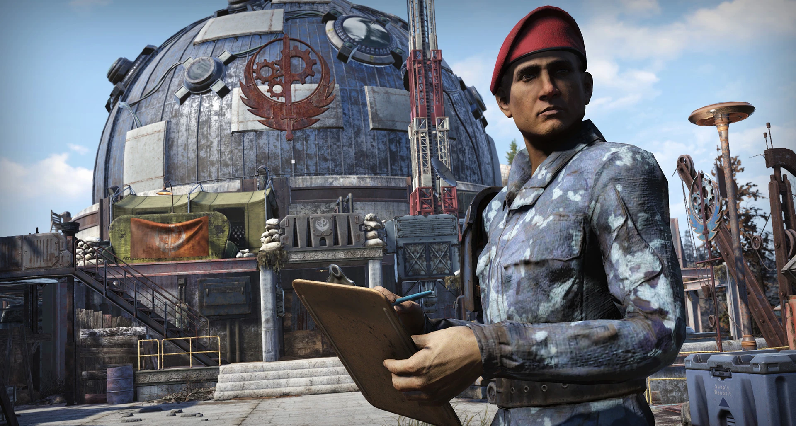
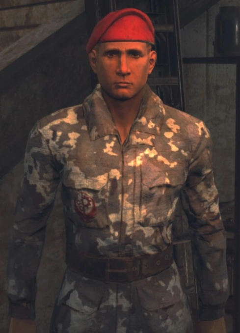

ラッセル・ドーシー
Russell Dorsey
「人々はブラザーフッドのような組織の価値を理解していない。誰もがただ……その場しのぎで生きているだけなんだ。」
―― ラッセル・ドーシー
概要
ラッセル・ドーシー（Initiate Russell Dorsey）は、アパラチアのアトラス砦（旧ATLAS観測所）に駐屯するブラザーフッド・オブ・スティール第一遠征軍のイニシエイト（新兵）である。
彼はブラザーフッドへの入隊を夢見て、まだ本隊がアパラチアに到着する前から独力で施設の復旧と要塞化を開始した、極めて熱心な志願者として知られている。
背景
メリーランド州出身のラッセル・ドーシーは、2103年頃に他の入植者たちと共にアパラチアに到着し、当初はファウンデーション（旧スプルース・ノブ）に移住して生活を送っていた。彼はファウンデーションでの生活自体は楽しんでいたものの、単なる「土地の再定住」や日々の生存を超えた、より大きな目的や規律を渇望していた。
偵察任務中に旧アパラチア支部が残した記録をディファイアンス砦で発見したことで、彼のブラザーフッド（B.O.S.）への関心は決定的なものとなった。また、彼はクレーターのレイダーズとも接触しており、彼らを「親切だがタフな連中」と認めつつも、「結局は自分たちの利益しか考えていない」と冷静に分析していた。
彼の行動の原動力は、かつてアメリカ海軍に所属していた亡き父親の影響が極めて大きい。すでに崩壊し解散してしまったアメリカ軍に、息子である自分が入隊できなかったという事実が、彼を「軍隊の規律を継承するB.O.S.を支援する」という強固な決意へと駆り立てた。西部のロスト・ヒルズから遠征軍が向かっている無線を傍受すると、彼は迷わずATLAS観測所へと向かい、独力で拠点の修復を開始したのである。
現場調査：環境ストーリーテリング
アトラス砦の外壁を調査すると、ラッセルが独力で構築した初期の防衛設備の痕跡を確認できる。
- 独力の野営地: 砦の外階段の下には、彼が初期に使用していたテントと簡素なベッドが残されている。彼の「日記」は、このベッドの下にひっそりと隠されていた。
- ロボットの使役: 彼はロブコ社の元技術者グレッグから教わったハッキング技術を使い、施設に残されていた建築用プロテクトロンを「自分が監督官である」と誤認させて使役していた。現在、砦周辺で見られる足場やプラットフォームの多くは、この手法によって建設されたものである。
- 封鎖された入り口: 彼が最初に到着した際、施設内部に残っていた狂暴な警備ロボットを閉じ込めるために、彼は独力で内部への入り口を物理的に封鎖した。これは、後に到着するブラザーフッドが安全に施設を掌握できるようにするための配慮であった。
- 着陸パッド: ブラザーフッドが航空機を所有しているかどうかも分からない段階で、彼は「スペースがあったから」という理由だけで、将来の飛来に備えた着陸パッドを建設していた。
アーカイブ・アップデート：歴史的変遷
Ver. 1.3.0 (The Legendary Run) ラッセルが初めてアパラチアに登場。当時はアトラス観測所の外にポツンとテントを構えているだけの「ただのファン」のような存在であった。彼はサーバー全体の共同イベント「Fortifying ATLAS」の窓口となり、プレイヤーに膨大な資材の納品を求めた。
Ver. 1.5.0 (Steel Dawn) ブラザーフッド第一遠征軍が正式に到着。アトラス観測所は「アトラス砦」へと劇的な変貌を遂げ、ラッセルも念願のB.O.S.制服（イニシエイト・アーマー）を着用。正式な組織の一員として、入り口での受付業務を担当するようになった。
全文記録：ノートと日記
ラッセル・ドーシーの日記
機密
ここで日誌を書き始めることにした。こんな場所に一人でいると、どうせ独り言を言うようになるから、書き留めておいたほうがいいだろう。これが全部終わったときに見返せるものがあればいいしな。
スクラップを探していたら、ブラザーフッドの信号を拾った。最初はかすかなノイズだったが、やがて言葉が断片的に聞こえてきた。ブラザーフッド・オブ・スティールがウェストバージニアに戻ってくる！信じられないことだった。何が彼らを呼び戻したのか、なぜ西のロスト・ヒルズから送るのにこれほど時間がかかったのかは分からないが、事態を把握するとすぐに荷物をまとめてアトラス（ATLAS）に来た。彼らが来るのはここだ、だから僕もここにいなきゃならない。
これをやっている間、父さんのことをよく思い出す。ここで何かをセットアップするたびに、父さんならどうしただろうかと自分に問いかける。爆弾が落ちた後に住んでいた家、父さんが直した修理箇所、浄水器を置くために付け足した増築部分、温室……今でも鮮明に思い出せる。
父さんも、僕がここで作っているものを認めてくれると思う。生きてこれを見てほしかった。もし父さんが生きていたら、ここには来なかったかもしれないけど。
今でも父さんが恋しい。
バージニアの道中で出会ったグレッグ、どこにいるか分からないけど、改めてありがとう。
グレッグは爆弾が落ちる前、ロブコ・インダストリーズの技術者だった。プロテクトロン・ユニットの担当で、法人顧客のところへ行って現場メンテナンスをしたり、壊れたモチベーターを直したりしていたそうだ。
彼に会ったとき、彼は一台のプロテクトロンを連れていた。彼はそれを「クランクス」と呼び、その頭にボロボロの古いシルクハットを糊でくっつけていた。旅の荷物を運ばせていたんだ。
ある夜キャンプをしていたとき、彼はクランクスにちょっとした「ダンス」をさせ、あの機械的な声でふざけた歌を歌わせた。今まで聴いた中で最悪の歌声だったけど、僕らは大笑いしたよ。
彼は、古いショッピングセンターで壊れた脚部サーボのまま動いていたユニットを見つけ、修理した方法を説明してくれた。クランクスを開けて、マザーボードを直結し、メンテナンス回路を起動してコマンドシステムを上書きする方法を見せてくれたんだ。
おかしいよね。それがそんなに役に立つなんて思ってもみなかった。でもここに来て役に立ったんだ。プロテクトロンをおびき寄せて、サービスパネルをこじ開け、即席の修理を施すのは簡単じゃない。でも幸運なことに、一台手に入れれば、もっと多くを手に入れるのはずっと簡単になる。
僕がここに来たとき、この場所はひどい有様だった。壊れた車両とジャンク、そして狂ったロボットたちがパトロールしているだけ。最初に襲われたときは命からがら逃げ出したよ。
昔ここで何をしていたのか、なぜ天文台に警備ロボットがいるのかは分からない。でも、彼らがいてくれてよかった。たとえ最初は僕を撃とうとしたとしてもね。彼らがいないかったら、これだけのことは不可能だっただろう。重いものを運んだり、溶接したり、大変な建設作業をこなしてくれるロボットがいなければ、砂袋をいくつか並べるのが精一杯だったはずだ。
代わりに、僕らは瓦礫を取り除き、壁を作り始めた……へへ、着陸パッドまで作りかけだ。ブラザーフッドが航空機を持っているかどうかも分からないけど、スペースがあったから、作っておいて損はないだろう？
ただ、建物の中に何があるのかはまだ分からない。中でさらにロボットがガシャンガシャン動いている音が聞こえるし、中を覗いたときはボロボロに見えた。ブラザーフッドが来るまで、中のものが外に出ないように出口を板で塞いでおいた。僕より彼らのほうがどうすべきかよく知っているだろうし、外側だけでも手一杯だからな。
ここに書く時間がほとんどなかった。ブラザーフッドが戻ってきたんだ！僕とロボットたちだけで準備していたときも忙しいと思っていたけど、今は本当にギアが上がった感じだ。
正直なところ、たった三人だったときは驚いたよ。小隊とか部隊とか、そんな感じのが丸ごと来ると思っていたけど、実際はパラディン・ラフマーニ、ナイト・シン、スクライブ・バルデスの三人だけだった。
彼らは他にも大勢の「志願者」を連れていたけど、実際にブラザーフッドなのはその三人だけだったんだ。他のみんなは、途中で拾われたメンバー候補に過ぎなかった。僕と同じようにね。
でも、今は本物だ！ブラザーフッド・イニシエイト・ドーシーだ！彼らは僕がここで用意したすべてを見て、ほぼその場で入隊を認めてくれた。冗談かと思ったけど、ナイト・シンは冗談を言うようなタイプじゃないしな。
今でも朝起きると、全部夢だったんじゃないかと思うことがある。でも現実なんだ。僕は本当に、何かの、大きなものの一部になったんだ。どうにかして、父さんが僕の成し遂げたことを見て、誇りに思ってくれているといいな。
よし、イニシエイトとしての自分、仕事に戻れ。
立ち寄った方へ：
ロボットの予備パーツを探しに少し出かけている。僕らがここで何をしているかに興味があるなら、すぐ戻るから待っていてくれ。ここが終われば、素晴らしい場所になるはずだ。協力してくれることを願っている。
この場所を封鎖したから、もし中に入って覗こうと思っているなら……残念だが諦めてくれ。それと、僕がいない間に僕の物に触らないでほしい。無理やり止めることはできないけど、わざわざ嫌な奴になる必要もないだろう。
- ラッセル・ドーシー
ギャラリー


.png)

ラッセル・ドーシーというキャラクターは、Fallout 76の世界において「希望」と「執着」の絶妙なバランスを体現しています。単なるNPC以上の存在感を持っているのは、彼がプレイヤーと共に「拠点を造り上げた」という歴史を共有しているからでしょう。
核を落としても防護服を着て平然と立っているその強靭なメンタリティ（あるいはメタ的な不死属性）も含めて、彼こそがアパラチアにおけるブラザーフッドの再興を支えた真の功労者と言えるかもしれません。彼の物語は、規律を重んじるB.O.S.がいかにして「地元の住民」を取り込み、新たなアパラチアの物語を構築していったかを示す、最も美しい例の一つです。
This article was synthesized from Russell Dorsey and related pages on Nukapedia: The Fallout Wiki.
Licensed under the Creative Commons Attribution-Share Alike License (CC BY-SA 3.0).
© Overseer Mohi's Terminal — Fallout Lore Archive
コミュニティ維持のため、寄付を受け付けております。
> COMMENTS_